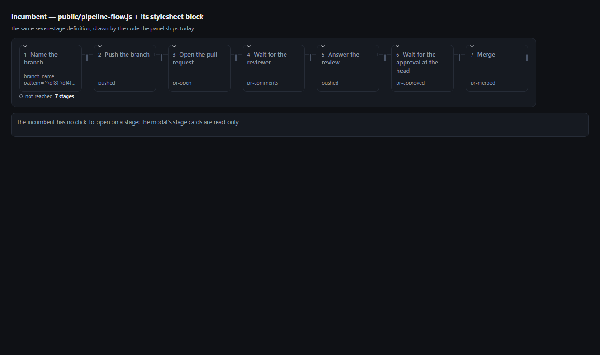
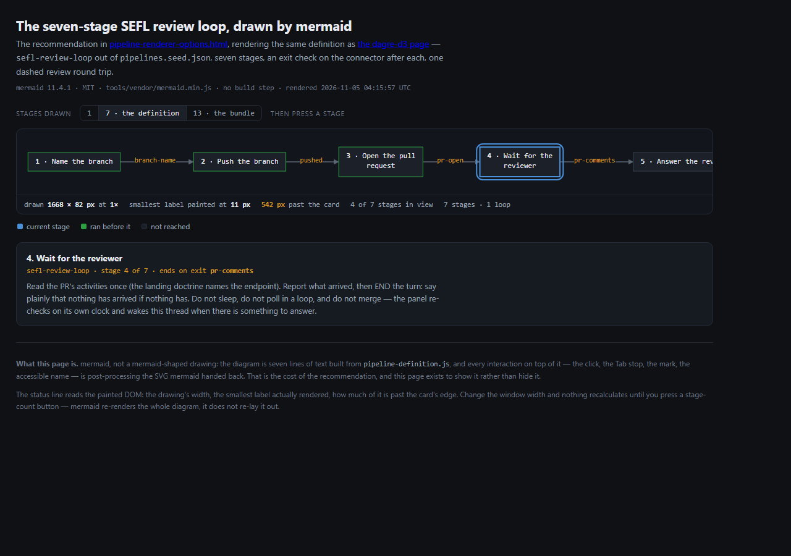
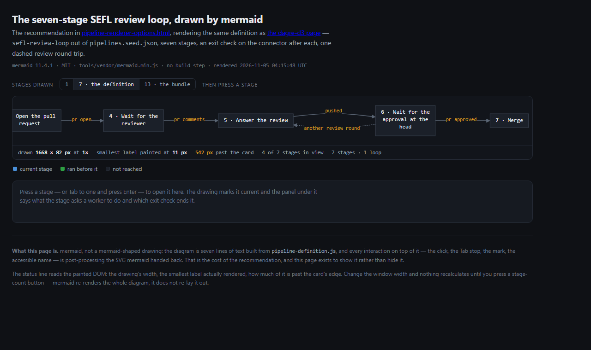
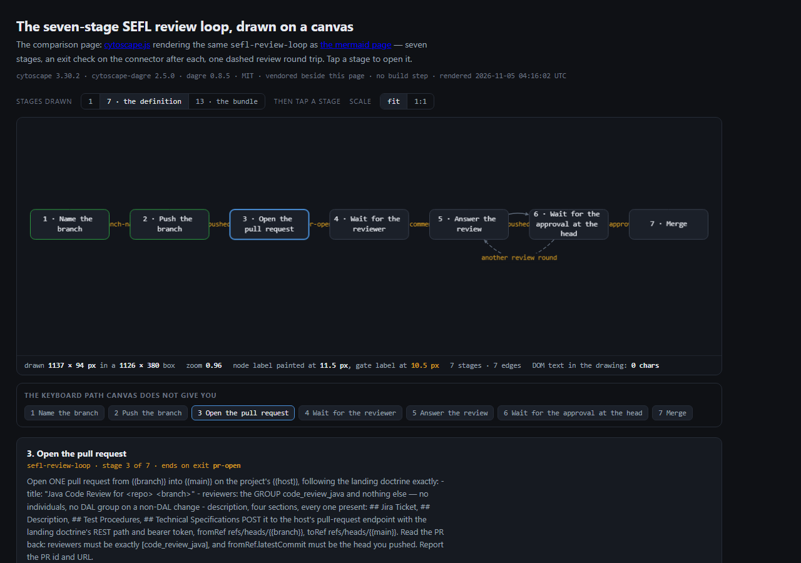
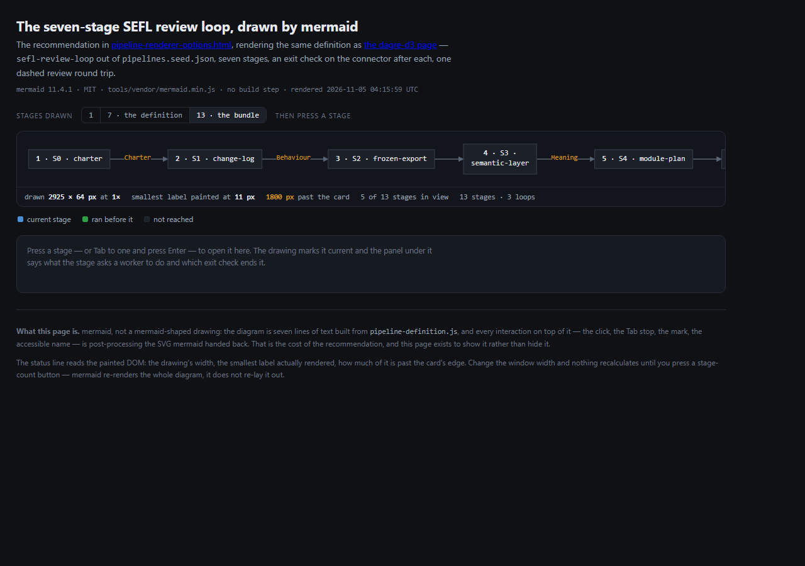
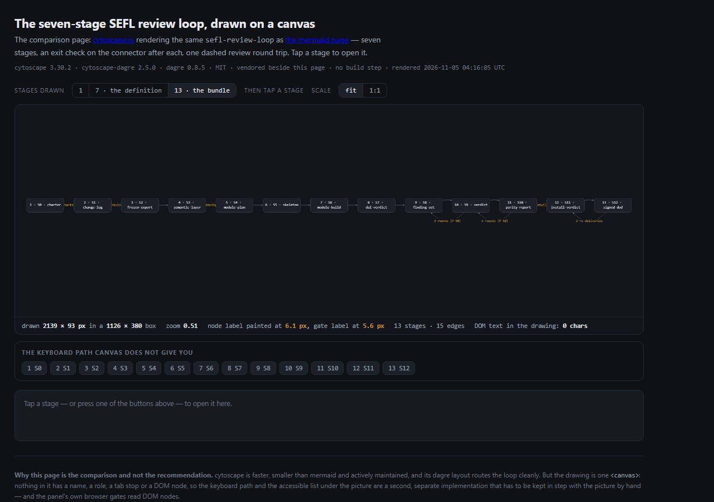

Five free, no-build-step libraries and the rail the panel already ships, measured on one real
definition — seven stages of sefl-review-loop — and on the thirteen-stage bundle, in a browser, at
1280×900. Two of them are also pages you can open and press.
mermaid (MIT) is the one candidate that is current and renders real DOM nodes: a click target, a tab stop, an accessible name and something the panel's own browser gates can read. It draws the whole seven-stage definition from about seven lines of text, which is what "cleaner" means here — roughly 123 of the renderer's 568 lines and 100 of its 126 stylesheet lines stop existing.
You pay for it three times: 2.57 MB (the copy already in tools/vendor, at 11.4.1, carrying nine
advisories) or 5.54 MB for the clean 12.3.0; a drawing 1.53× wider than the current rail at seven stages; and a
render that is asynchronous, so every per-node mark is post-processing of an SVG the library hands back.
Runner-up, one point behind: dagre-d3 — the same DOM guarantees, smaller and denser, but its newest release is
from 2019 and it ships a d3 whose d3-color carries an unfixed ReDoS advisory. Do not take the
canvas option for this dialog: it is the fastest and the only one that fits seven stages in the card, and it has no
DOM at all.
The brief names ten constraints. Two more come from the repository itself, and they are the ones that decide the question — so they are numbered here with the others and scored in §3.
| id | constraint | where it comes from |
|---|---|---|
| C1 | 1 to 13 stages, left to right, in one row. | pipelines.seed.json (1–7); pipeline-bundle.seed.json (13) |
| C2 | A gate sits between two stages and is the exit check that ends the one on its left. | public/pipeline-flow.js exitGate()/notchHtml() |
| C3 | Loop-back arcs, dashed and labelled, with a cap when the record carries one. | lib/pipeline-bundle.js handoffs kind:"loop" |
| C4 | Labels at 11 px or more, as painted. | brief; docs/reviews/pipeline-dialog-density-round.html |
| C5 | Click a stage to open it. | brief |
| C6 | Dark theme, the panel's own tokens. | public/style.css :root |
| C7 | Plain script tags: no build step, no module graph, no network. | the panel is served as files |
| C8 | A CSP that does not need unsafe-eval, and no remote fetch. | brief |
| C9 | Bundle size, and a licence that can be vendored. | brief; tools/vendor/mermaid.min.js is the precedent |
| C10 | How much of public/pipeline-flow.js's 568 lines go away. | brief |
| C11 | The picture stays in the DOM — the four marks, the gate states and the aria names are asserted by test/pipeline-flow.test.js and eight browser tools. | docs/reviews/pipeline-flow-architecture.md §2, §4 |
| C12 | It fits a 1120 px card, because the modal is a dialog and not a page. | .pmodal-card at public/style.css:4214 |
One thing the brief assumes that the data does not say: a definition carries no loop. sefl-review-loop's
next is null and each stage ends on an exit check; the round trip that actually happens — a reviewer asks for
changes, the work is answered, the head is reviewed again — is in the prompts, not in a field. Both demos draw it as one
dashed edge from approve back to address, labelled another review round, so C3 is
exercised; the thirteen-stage view of the bundle uses its own three real loop handoffs, caps and all.
Everything below was taken in this session from a checkout at 5e84586, in Chromium at
1280×900, loading each candidate from file:// with plain script tags. Sizes are the exact bytes of
the file a page would have to load; "published" is the package's latest release date on npm; "advisories" is a query
against OSV for the exact version measured. The two pages with demos were measured as committed pages, not as sketches.
| option | measured | licence | published | bytes | advisories | how a page loads it |
|---|---|---|---|---|---|---|
| mermaid | 11.4.1 vendored 12.3.0 latest | MIT | 2026-11-03 | 2,571,900 5,537,838 | 9 on 11.4.1 0 on 12.3.0 | one <script>; the 11.x copy is already at tools/vendor/mermaid.min.js |
| dagre-d3 | 0.6.4 + d3 5.16.0 | MIT | 2019-12-03 | 973,495 | 0 on itself | two <script> tags; the bundle does not export the d3 it needs, so d3 is a second file |
| cytoscape | 3.30.2 + cytoscape-dagre 2.5.0 + dagre 0.8.5 | MIT | 2026-10-15 (3.34.4 latest) | 669,772 | 0 | three <script> tags; a canvas needs no CSS of yours |
| elkjs | 0.9.3 | EPL-2.0 or GPL-3.0 | 2026-10-28 (0.12.1 latest) | 1,606,238 | 0 | one <script>; layout only — the painter is yours |
| graphviz | @hpcc-js/wasm 2.36.0 | Apache-2.0 | 2026-10-21 | 820,997 | 0 | one <script> with the WASM inlined as base64, so file:// works |
The two advisory rows are the interesting ones. mermaid 11.4.1 carries nine
moderate/low advisories — DoS in XY and Gantt charts, CSS injection through classDef, XSS in sequence and
architecture labels — and every one of them is fixed in 12.3.0. dagre-d3's own package is clean, but the d3 5.16.0 it
bundles contains d3-color 1.4.1, which carries GHSA-36jr-mh4h-2g58; the
fix ships only in d3-color 3, which d3 5 cannot use.
| option | 7 stages, drawn | 13 stages, drawn | smallest label painted | click→open | gate sits on | text in the DOM |
|---|---|---|---|---|---|---|
| incumbent | 1086 px, fits the card | 1560 px, 474 past | 11 px | no — cards are read-only | a notch in the gap, 7 for 7 | yes, 7 nodes |
| mermaid | 1668 px, 542 past | 2925 px, 1800 past | 11 px | yes, after ~20 lines of wiring | an edge label — it takes 40–60 px of gap | yes, g.node |
| cytoscape | 1137 px at 0.96×, fits | 2139 px at 0.51× → 6.1 px | 11.5 px node / 10.5 px gate | yes, native tap | an edge label | 0 characters — one <canvas> |
| dagre-d3 | 1578 px, 458 past | 1558 px* | 11 px | yes, g.node | an edge label | yes, g.node |
| elkjs | 1626 px, 506 past | 3078 px* | 11 px | only what you paint | an edge label you place | yes, your own <g> |
| graphviz | 1889 px, 769 past | 2899 px* | 11 px | no — one static SVG string | an edge label that overlaps the nodes | yes, but inert |
* The thirteen-stage probes for dagre-d3, elkjs and graphviz label the bundle's
stages by id (S0…S12) because the bundle carries no titles, so those three are lower bounds;
mermaid and cytoscape were measured on the committed demo pages, whose 13-stage view also uses ids. The seven-stage column
is the fair one: same definition, same titles, same exit checks. "Painted" means font-size × the scale the drawing is
actually rendered at — a 12 px label in a drawing squeezed to 0.51 is 6.1 px, which is the number a reader sees.

public/pipeline-flow.js at 5e84586: seven columns in 1086 px, a notch in
each gap, the exit check printed under the title, and 11 px text. No dependency, no scroll, and no click — the cards are
read-only.

calc() arithmetic in the rail.


The weights are a judgement and are written down so they can be argued with: ×3 for what the repository cannot give up (C11 DOM, C5 click, C10 what it deletes, C4 the 1–13 range at 11 px, and being maintained), ×2 for bytes, ×1 for the rest. Each cell is 0–5; the total is out of 90.
| option | DOM ×3 | click ×3 | deletes ×3 | 1–13 ×3 | kept ×3 | bytes ×2 | no-build | loops | total /90 |
|---|---|---|---|---|---|---|---|---|---|
| mermaid rec | 5 | 4 | 5 | 5 | 3 | 1 | 5 | 5 | 78 |
| dagre-d3 | 5 | 5 | 5 | 5 | 1 | 3 | 4 | 4 | 77 |
| cytoscape | 1 | 5 | 5 | 2 | 5 | 4 | 5 | 4 | 71 |
| elkjs | 5 | 3 | 2 | 5 | 5 | 1 | 5 | 3 | 70 |
| graphviz | 3 | 0 | 3 | 5 | 5 | 2 | 4 | 3 | 59 |
mermaid and dagre-d3 are one point apart, and that gap is not the reason for the choice — the maintenance line is. A package whose newest release is from 2019, that cannot take a current d3 and whose drawing is version-frozen is a dependency you adopt once and can never move; a package on a release train is one you can bump for the next advisory. If you would rather have 600 KB than a maintainer, dagre-d3 is the pick and the rest of this page still applies to it.
The honest number is not "one file". The renderer is two-thirds domain vocabulary that a library cannot replace, and the tests and browser tools read the markup the renderer emits, so every one of them moves too.
| file | lines | what moves |
|---|---|---|
| public/pipeline-flow.js | 568 | ≈123 out — notchHtml, stageHtml, the arc constants, pointAt/centreOf/cssPoint, layout, arcsHtml, markup. ≈90 in — build the diagram text from the normalised shape, render, then wire ids, marks, focus and aria onto the returned SVG. |
| public/style.css | 126 | the .pflow* block at 4079–4204: the grid, the notch, the arc lanes and the fit arithmetic are replaced by ~20 lines of SVG/node styling. Theme tokens stay. |
| test/pipeline-flow.test.js | 272 | assertions on a markup string become assertions on a rendered node; markup() no longer exists as a pure function. |
| test/pipeline-modal.test.js | 169 | the mount and repaint path — a library renders asynchronously, so "the drawing is there after paint()" becomes a wait. |
| test/pipeline-truth.test.js | 347 | the mark vocabulary read out of the DOM. |
| tools/verify-pipeline-flow.mjs | 376 | four browser gates and a capture tool read .pflow-node, .pflow-notch, data-mark and data-pos; every selector moves to the SVG's classes or to the post-processed attributes, and the fit/scroll measurements have to be re-derived because mermaid has no fit. |
| tools/verify-pipeline-flow-usability.mjs | 609 | |
| tools/verify-pipeline-flow-visible.mjs | 776 | |
| tools/verify-pipeline-dialog-size.mjs | 389 | |
| tools/capture-pipeline-flow.mjs | 548 | the screenshots the docs quote. |
Ten files: 3,486 lines of test and tool that name the flow, and 223 lines of the renderer and its stylesheet. The file itself shrinks by only about 33 lines — what changes is that the 123 lines of geometry stop being ours.
What does not move: the three adapters (≈111 lines), marksFor/ranFrom (≈56), the gate
vocabulary and its aria sentences (≈78) and the legend/count/status band (≈98) — about 343 of the 568. That split is the
finding: a library replaces the drawing, not the meaning.
Two pages, both standalone, both rendering the same definition — the real
sefl-review-loop out of pipelines.seed.json, seven stages, an exit check between each, one dashed
review round trip. Open them side by side:
Both print their own measurements from the painted DOM under the drawing — width, the smallest label actually rendered, how much is past the card, how many stages are in view. Those are the numbers in §2; a page that computes them cannot quietly disagree with the table.
aria-current step, the loop cap printed from fields rather than parsed out of a sentence, and the provenance
that says which rule drew the marks — all of that is domain vocabulary and it stays in the file, library or not.mermaid.render returns a promise, so a position change is a
render you have to sequence — the modal's current "replace the element" path becomes "render, then wire, then mark".A probe per candidate in a scratch directory, all loaded from file:// in Chromium at 1280×900, driven by
Playwright; the two committed pages driven the same way for the numbers in §2. The baseline was measured by rendering
public/pipeline-flow.js with the stylesheet block lifted verbatim out of public/style.css
(4079–4204) into a 1120 px card — the same code the panel runs, not a redrawing of it.
Seven defects in this list were produced by the measurement itself, and each one is a reason a naive adoption looks fine and is not:
useMaxWidth, seven stages in a
1126 px card come back with 12 px labels painted at 6.5 px — and the computed font-size is still 12 px, so a
stylesheet reading says the labels are fine. The demo resets the SVG to its viewBox and reports font-size × scale.<svg>
inside a flex row was painted at 0.59× until it got flex: 0 0 auto. Two independent ways to lose the
same 8 px.max-width on the HTML label wraps the text
visually and does not narrow the node — the string has to carry the break. The demo wraps at 18 characters itself, which
is what took the seven-stage drawing from 1874 px to 1668 px.flowchart-n_pr-2; 12 prefixes the render
id (pflow_1-flowchart-n_pr-2). The only per-node hook mermaid offers is that id, so a post-processing
integration is coupled to the major version — the demo matches the tail with a regex and was verified on both.fit is a trap of the same shape. It renders 12 px labels at 6.1 px at thirteen
stages (zoom 0.51) and nothing errors. The demo prints the product and offers a 1:1 press.setGraph() replaces the graph's label object. Calling it a second time to set
labelType drops rankdir: "LR" and the drawing comes back 257×732, vertical, with no
error.label= on an edge the text is painted across
the node it points at (br-comments over Wait for the reviewer); xlabel= is the spelling that
works, and the library still has no hit testing.Two of the four objections in the repository's own review — docs/reviews/pipeline-flow-architecture.md §5,
"no per-node state API … not keyboard-operable" — do not survive the probe: both are ~20 lines of post-processing, and the
demo does them. The other two — 2.5 MB for one dialog, and an asynchronous render — are real and are priced in §3.
| source | what it establishes | kind | checked |
|---|---|---|---|
npm registry, mermaid, dagre-d3, cytoscape, cytoscape-dagre, dagre, elkjs, @hpcc-js/wasm | version, licence and last publish date per package | lookup | 2026-11-05 |
OSV (api.osv.dev/v1/query) | advisories for the exact versions measured, including d3-color 1.4.1 | lookup | 2026-11-05 |
pipelines.seed.json, pipeline-bundle.seed.json | the seven-stage definition and the thirteen-stage bundle, read once into demos/pipeline-definition.js | repo | at 5e84586 |
public/pipeline-flow.js, public/style.css 4079–4204 | the baseline drawing and its stylesheet block, rendered as committed | repo | at 5e84586 |
docs/reviews/pipeline-flow-architecture.md | the earlier verdict, the DOM/gate constraint (C11) and the pixel defects this page does not re-litigate | repo | at 5e84586 |